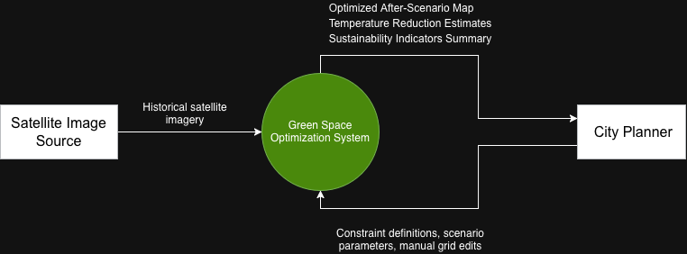
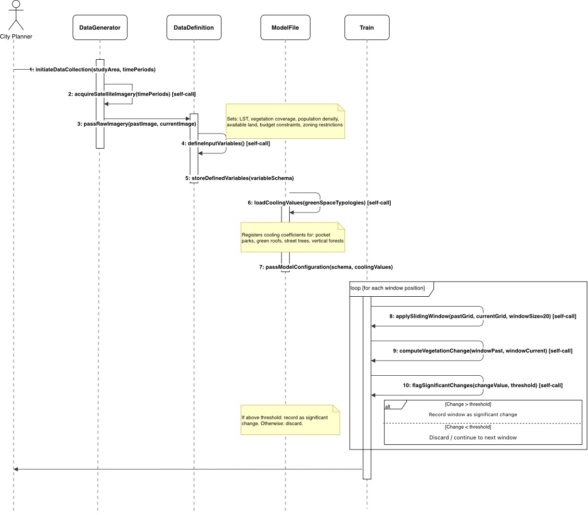
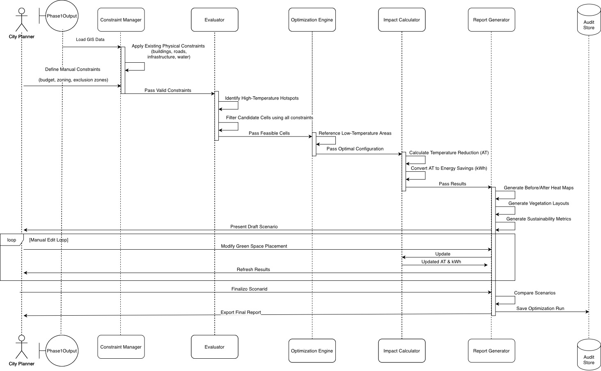
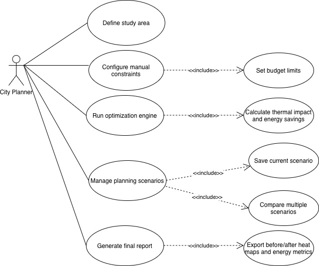
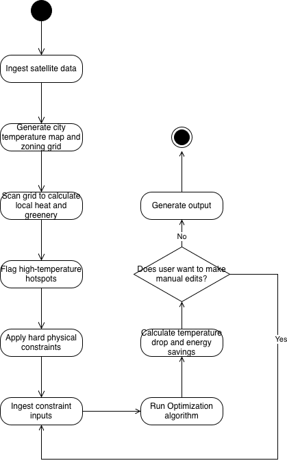

System Design Diagrams
The following diagrams provide multiple views of the Green Space Optimization System, including its scope, user interactions, data structures, workflows, and communication between system components throughout both phases of processing.
Diagram 1 – Context Diagram

The Context Diagram defines the overall system boundary and identifies the external entities that interact with the Green Space Optimization System. The City Planner provides the study area definition that specifies where the analysis should be performed, while the Satellite Image Source supplies historical multi-period satellite imagery used throughout the workflow.
At this level, the system is treated as a black box. Internal components and processing logic are intentionally hidden to emphasize inputs and outputs. The system produces several outputs for planners, including vegetation maps, heat maps, green space opportunity maps, temperature reduction estimates, and sustainability indicator summaries that support urban planning decisions.
Diagram 2 – Phase 1 Sequence Diagram (Data Preparation)

This sequence diagram illustrates the interactions between the City Planner, DataGenerator, DataDefinition, ModelFile, and Train components during the data preparation phase. The process begins when the planner initiates data collection for a selected study area and time period.
The DataGenerator retrieves satellite imagery and passes it to the DataDefinition component, which defines the required variables such as land surface temperature, vegetation coverage, population density, available land, budget constraints, and zoning restrictions. Configuration data and cooling coefficients for green space typologies are stored and loaded through the ModelFile component.
The Train component performs vegetation change detection using a 20×20 sliding window approach. It computes vegetation change values, identifies significant changes using threshold checks, and returns the generated change records. Upon completion, the system notifies the City Planner that Phase 1 processing has successfully finished.
Diagram 3 – Phase 2 Sequence Diagram (Optimization and Evaluation)

This sequence diagram represents the optimization and evaluation phase of the Green Space Optimization System. The Evaluator receives the outputs generated during Phase 1, including change records, vegetation grids, and land surface temperature data.
The Evaluator identifies thermal hotspots and calculates suitability scores for candidate locations. These results are passed to the EvolutionaryGenerator, which repeatedly generates candidate green space configurations, evaluates their fitness, and selects the optimal arrangement through an iterative optimization process.
The optimal solution is forwarded to the ReportGenerator, which creates multiple outputs including the current heat map, vegetation maps, vegetation change map, optimized after-scenario map, temperature reduction estimates, and sustainability indicator summaries. These outputs are then delivered to the City Planner to support evidence-based urban planning and decision-making.
Diagram 4 – Use Case Diagram

The Use Case Diagram illustrates the interactions between the City Planner and the Green Space Optimization System. It defines the system functionality from the user's perspective and establishes the boundary between user-controlled actions and automated system processes.
The City Planner is the sole actor and is responsible for providing the study area, selecting or supplying satellite imagery, and initiating the analysis pipeline. Once processing is complete, the planner can review a variety of outputs including vegetation maps, vegetation change maps, opportunity maps, heat maps, optimized after-scenario maps, temperature reduction estimates, and sustainability indicator summaries.
The diagram also includes an optional Export Reports use case, allowing planners to save or share generated outputs. This highlights the distinction between the planner's direct interactions and the system's internal automated operations.
Diagram 5 – Class Diagram

The Class Diagram defines the primary data structures used throughout the Green Space Optimization System. It models how information is represented, stored, and transferred between the major processing stages of the application.
Input-related classes such as StudyArea and SatelliteImage represent the geographic region and imagery data supplied to the system. Processing classes including VegetationGrid, GridCell, VegetationChangeRecord, ThermalHotspot, and CandidateConfiguration capture the information generated and manipulated during analysis and optimization.
Output-oriented classes such as OptimizationResult, Report, and MapOutput represent the final artefacts delivered to city planners. The relationships between these classes demonstrate how data flows through the two-phase processing pipeline from raw satellite imagery to optimized green-space recommendations and planning reports.
Diagram 6 – Activity Diagram: Full System Workflow

This activity diagram presents the complete end-to-end workflow of the Green Space Optimization System. It describes how the system processes user inputs, performs environmental analysis, generates optimization solutions, and produces planning outputs.
The workflow begins when the City Planner defines a study area and the system acquires multi-period satellite imagery. After validating the input data, the system generates vegetation grids and applies a 20×20 sliding window technique to detect vegetation changes and identify significant environmental transformations.
Following the completion of Phase 1, the system enters Phase 2 where urban thermal conditions are evaluated, thermal hotspots are identified, and suitability scores are calculated for candidate locations. An evolutionary optimization process then generates and evaluates multiple green-space configurations before selecting the optimal solution.
Finally, the system generates vegetation maps, opportunity maps, heat maps, optimized after-scenario maps, temperature reduction estimates, and sustainability indicator summaries. These outputs are compiled into reports and delivered to the City Planner to support urban planning and decision-making.